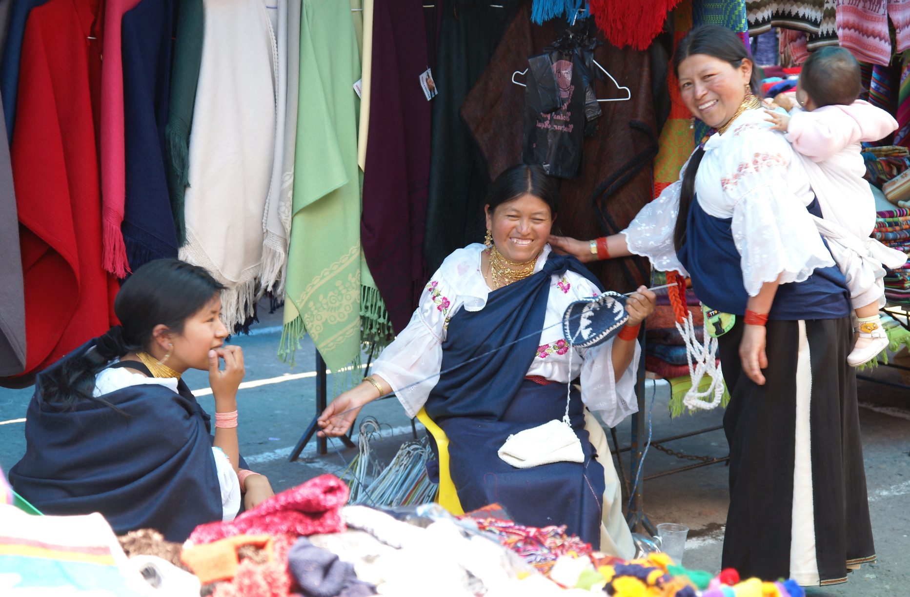
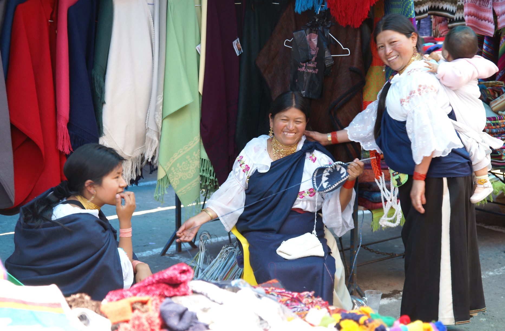

 
Sobre
SARA (Search and Rescue Alerts: Alertas de Búsqueda y Rescate) emplea el poder de ciudadanos cariñosos para ayudar a buscar personas desaparecidas y volverlas a casa de manera segura SARA utiliza mensajes de texto para avisar al público sobre las persnonas desaparecidas, para que se pueda enfocar en las actividades cotidianas. Mensajes de texto se envían a su celular de agencias policiales apropadas que pueden incluir una foto y descripción del individuo, información de las circunstancias y detalles de las búsquedas organizadas o lugares donde se pueden enviar pistas. ¡Un afiche con una persona desaparecida en la palma de la mano!
Los que desean recibir avisos de personas desaparecidas en su área son invitadas a registrarse a SARA en este sitio web. Agencias policiales soportadas enviarán avisos urgentes directamente a su celular o computadora.